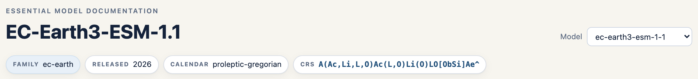
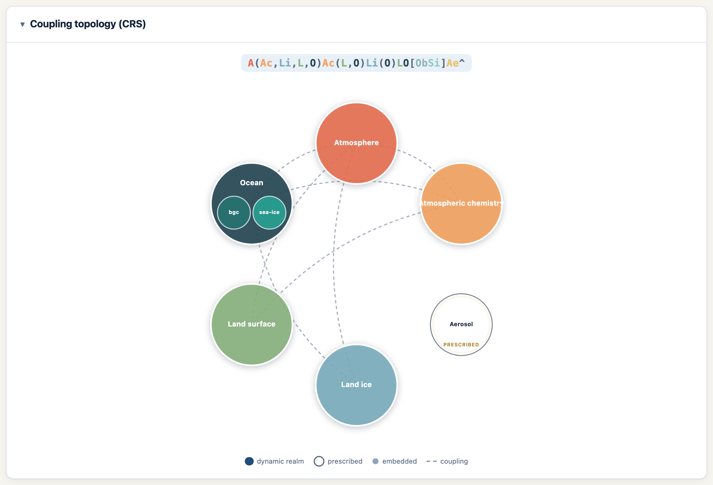
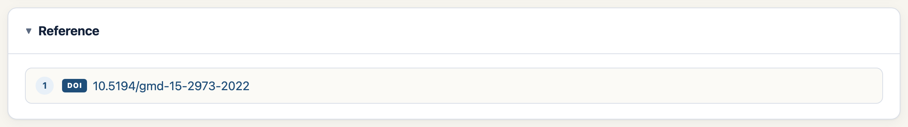
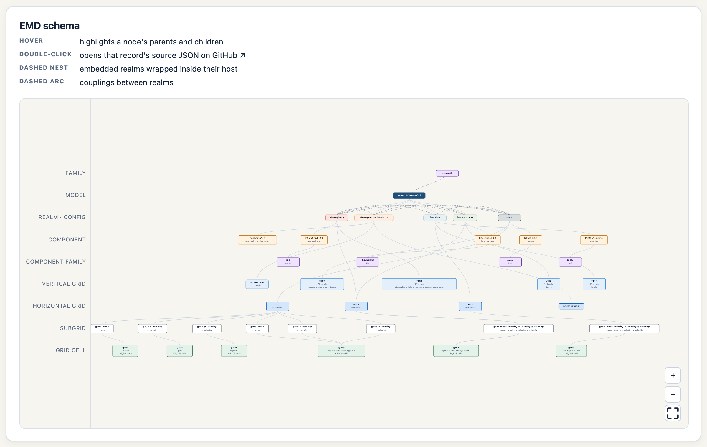
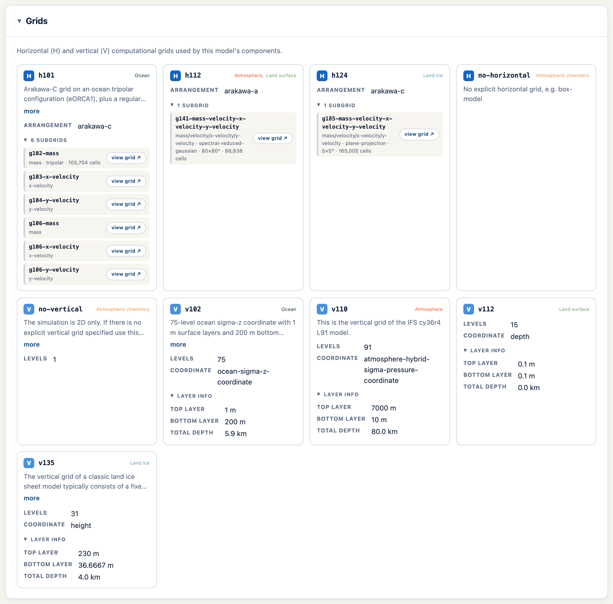

EMD Model Page — Features & How to Use
1. Header & model picker

The header shows the model's display name and a row of quick-fact chips: family, release year, calendar, and the raw CRS string. The Model dropdown on the right switches models; the URL updates so the view is shareable, and browser back/forward work.
2. Overview

A plain-language description of the model followed by some basic statistics: how many dynamic realms, prescribed realms, omitted realms, components, and couplings it has.
Descriptions are rendered from Markdown, so links and emphasis display properly.
3. Coupling topology (CRS)

This is a picture of how the model's realms fit together.
The coloured CRS string at the top links each realm code with its realm colour. Embedded realms are inside the […] and coupled realms are neighboured following the design tactics of the crs.
The diagram is generated from the crs string:
- Dynamic realms: filled circles arranged on a ring.
- Embedded realms: the small circles packed inside a parent circle.
- Prescribed realms (external, one-way forcing) are drawn smaller, unfilled, with a faint double ring and a "prescribed" label
- Couplings are the dashed arcs between realms.
4. References

Every reference on the model record gets its own card — a numbered badge plus a DOI badge and link where available, or the citation text for free-form entries. These will be resolved using the data cite information and improved.
5. Model family

The family the model belongs to: type, primary institution, collaborators, scientific domains, year established, programming languages, licence, and website / source links, plus any family-level references. This helps give us an understanding of where this specific model is coming from.
6. EMD schema (interactive graph)

A tiered, force-directed graph of the entire record and everything it links to.
This is generated by following the links from the source_id all the way until the individual grids and provides a good representation of how the EMD is defined in the background any all the submissions that go into creating a source id.
How to use it:
- Hover a node to spotlight its parents, children, and coupling partners.
- Double-click a node to open that record's source JSON on GitHub in a new tab.
- Drag a node to reposition it; scroll to zoom, drag the background to pan.
- Use the + / − / fit buttons (bottom-right) to zoom or re-fit the whole graph.
- Dashed boxes ("nests") wrap embedded realms inside their host; dashed arcs mark couplings.
7. Components in detail

One card per realm, detailing the component that describes it. Component information such as description, reference and code base are also provided.
8. Grids

One card per distinct grid the model uses:
- An H / V badge marks horizontal vs vertical grids, next to the grid id.
- The realm(s) that use the grid are listed as small realm-coloured, comma- separated tags. These help identify where the grids are being used for this specific source_id.
- Horizontal grids have an expandable subgrids list. Each subgrid row shows its variable type, grid type, resolution and cell count, plus a link to the grid for those requifing more information.
- Vertical grids show levels and coordinate, with layer thicknesses (top / bottom / total depth) hidden in a collapsible "Layer info" box - similar to the subgrids for the horizontal.
9. Model record (JSON)
![Raw JSON viewer with Simple/Resolved toggle and copy button]
The raw JavaScriptObjectNotation record, syntax-highlighted, always at the bottom of the page. Use the Simple ⇄ Resolved toggle to switch between the record as defined in the model file, or a recursively populated version going all the way until the horizontal-grid-cell level. The Copy button copies whichever view is showing.